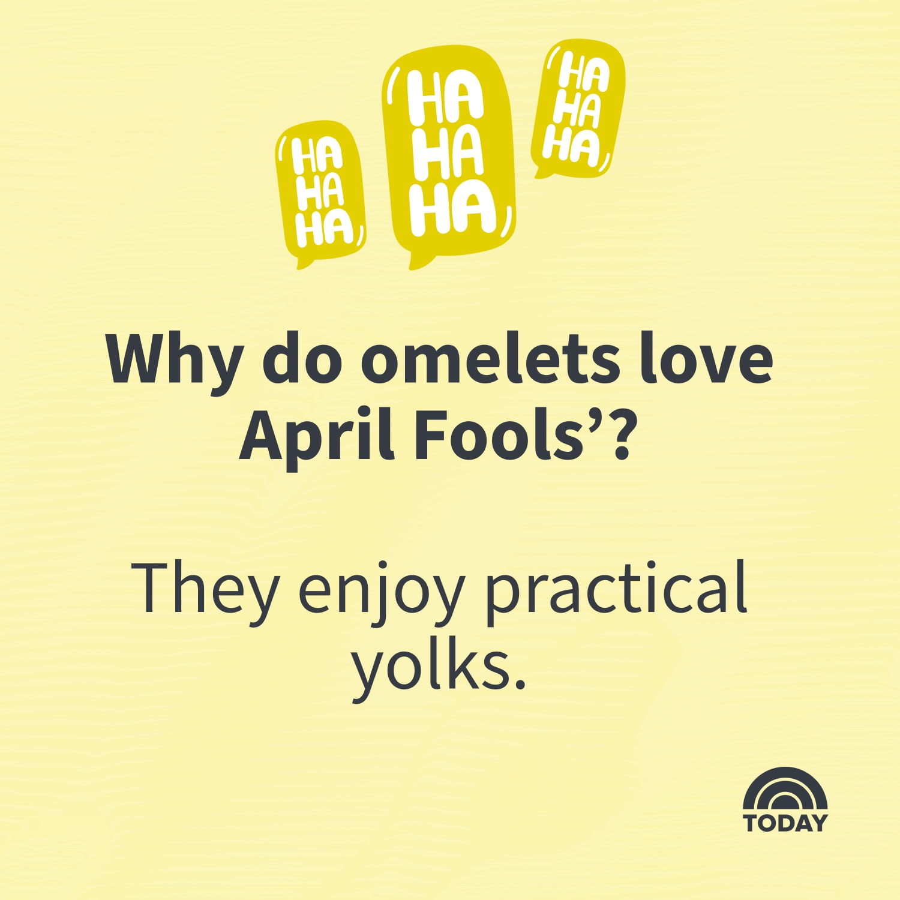
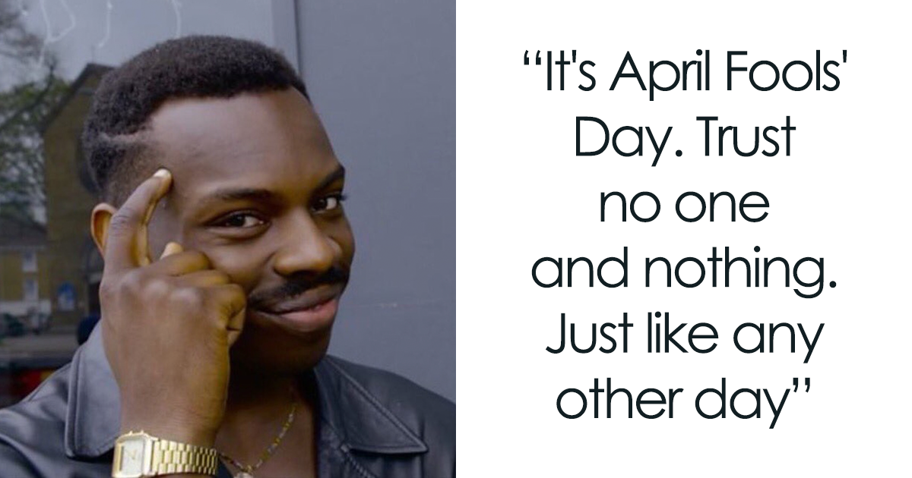

Content
Created by Emily Madsen
I made this for you :)

Prank Ideas
- Apartment complex kicking everyone out for a month
- Dates in the ice maker
- Pop Rocks in a Hamburger
More Ideas
- Tape on the bottom of the mouse
- Milk that's been turned to jello
- Eyes on the eggs
- Oreos filled with toothpaste
- Grapes in Chocolate Easter Egg wrapers
- Prank Cake Pops
- Head in a Jar Prank
- Meatloaf "Cupcakes"
- There's a lot of food prank ideas on the internet


Click if you dare...


Top